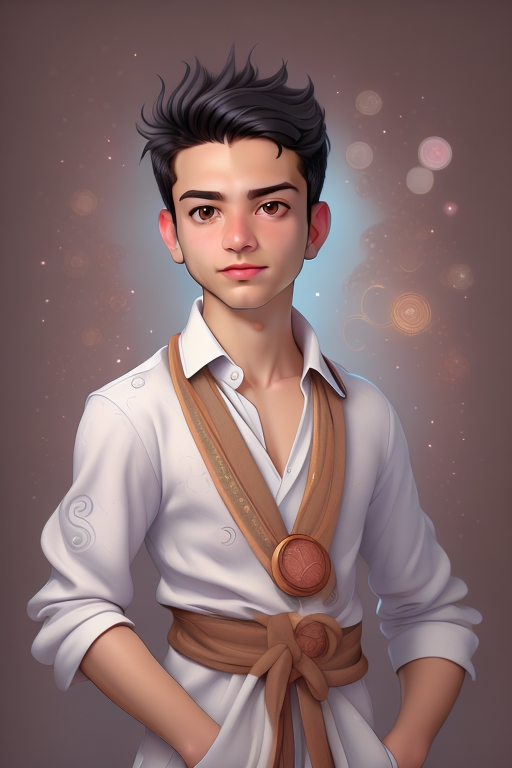

راهنمای استفاده از ویژگی تولید چهره
ویژگی تولید چهره در AiCasso بسیار انعطافپذیر است! این امکان را به شما میدهد که تصاویر شگفتانگیزی با ترکیب یک چهره خاص در شخصیتها یا سبکهای مختلف ایجاد کنید. چه در حال تصور یک شوالیه، سامورایی یا هر شخصیت دیگری باشید، AiCasso از چهره ورودی برای تولید تصویری با آن چهره در طراحی درخواست شده استفاده میکند.
چگونه کار میکند:
تصویر ورودی:
دستور ۱:
"یک شوالیه واقعی، از حداکثر مقیاس استفاده کنید"
نتیجه ۱:
دستور ۲:
"از سبک چینی استفاده کنید و یک سامورایی بسازید، از مقادیر پیشفرض استفاده کنید"
نتیجه ۲:

دستور ۳:
"یک سامورایی، از ۳۱ مرحله کاهش نویز استفاده کنید و از سبک انیمه"
نتیجه ۳:
پارامترهای اختیاری
اگر میخواهید کمی شخصیت یا کنترل بیشتری به تصاویر تولید شده خود اضافه کنید، در اینجا چند گزینه وجود دارد که میتوانید تنظیم کنید:
- دستور منفی: اینجا جایی است که میتوانید به AiCasso بگویید چه چیزی را نمیخواهید در تصویر ببینید. اگر این قسمت را خالی بگذارید، AiCasso فقط بر روی دستور مثبت تمرکز خواهد کرد.
- تعداد مراحل کاهش نویز: این کنترل میکند که تصویر چقدر صاف و تصفیه شده به نظر برسد. میتوانید بین ۲۱، ۳۱ یا ۴۱ مرحله انتخاب کنید که ۴۱ پیشفرض است. مراحل بیشتر به معنای تصویر تمیزتر و صیقلیتر است.
- مقیاس راهنمایی: این کمک میکند تا تصویر به توصیف شما وفادار بماند. مقیاس از ۱ تا ۲۰ متغیر است که ۱۰ پیشفرض است. اعداد بالاتر به این معنی است که AiCasso به دستور شما نزدیکتر خواهد بود.
- مقیاس S: این به ساختار چهره مربوط میشود. کمی فنی است، اما اساساً وزن ساختار چهره را تنظیم میکند. پیشفرض ۱.۰ است و میتوانید از ۰.۰ تا ۲.۰ بروید.
- سبک: آیا میخواهید به تصویر خود حال و هوای خاصی بدهید؟ میتوانید سبکی مانند کمیک، چینی، ۳D، انیمه یا واقعی انتخاب کنید. واقعی پیشفرض است، اما احساس خلاقیت کنید!
و به یاد داشته باشید، AiCasso بسیار بخشنده است. شما نیازی به یک جادوگر گرامر ندارید یا هر جزئیات را به طور کامل درست کنید. فقط آنچه را که میخواهید به زبان خود توصیف کنید و AiCasso بقیه را انجام خواهد داد. از خلق کردن لذت ببرید!